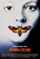
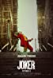
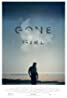

|
|
Top 15 highest rating IMDB psychological movies |
Cover |
Name |
Rating |
Genres |
Realease year |
Director |
Number of votes |
Description |
Source |
 |
The Dark Knight |
Action, Crime, Drama |
2008 |
Christopher Nolan |
2,322,678 |
When the menace known as the Joker wreaks havoc and chaos on the people of Gotham, Batman must accept one of the greatest psychological and physical tests of his ability to fight injustice. |
||
Initiation |
Crime, Horror, Mystery |
2020 |
John Berardo |
74 |
Whiton University unravels the night a star-athlete is murdered, kicking off a spree of social media slayings that force students to uncover the truth behind the school's hidden secrets and the horrifying meaning of an exclamation point. |
|||
 |
Se7en |
Crime, Drama, Mystery |
1995 |
David Fincher |
1,459,024 |
Two detectives, a rookie and a veteran, hunt a serial killer who uses the seven deadly sins as his motives. |
||
|  | The Silence of the Lambs |
Crime, Drama, Thriller |
1991 |
Jonathan Demme |
1,283,142 |
A young F.B.I. cadet must receive the help of an incarcerated and manipulative cannibal killer to help catch another serial killer, a madman who skins his victims. |
||
The Usual Suspects |
Crime, Mystery, Thriller |
1995 |
Bryan Singer |
998,259 |
A sole survivor tells of the twisty events leading up to a horrific gun battle on a boat, which began when five criminals met at a seemingly random police lineup. |
|||
Psycho |
Horror, Mystery, Thrillers |
1960 |
Alfred Hitchcock |
609,139 |
A Phoenix secretary embezzles $40,000 from her employer's client, goes on the run, and checks into a remote motel run by a young man under the domination of his mother. |
|||
|  | Joker |
Crime, Drama, Thriller |
2019 |
Todd Phillips |
963,097 |
In Gotham City, mentally troubled comedian Arthur Fleck is disregarded and mistreated by society. He then embarks on a downward spiral of revolution and bloody crime. This path brings him face-to-face with his alter-ego: the Joker. |
||
 |
Reservoir Dogs |
Crime, Drama, Thriller |
1992 |
Quentin Tarantino |
925,874 |
When a simple jewelry heist goes horribly wrong, the surviving criminals begin to suspect that one of them is a police informant. |
||
M |
Crime, Mystery, Thriller |
1931 |
Fritz Lang |
144,689 |
When the police in a German city are unable to catch a child-murderer, other criminals join in the manhunt. |
|||
Shutter Island |
Mystery, Thriller |
2010 |
Martin Scorsese |
1,143,022 |
In 1954, a U.S. Marshal investigates the disappearance of a murderer who escaped from a hospital for the criminally insane. |
|||
 |
Heat |
Crime, Drama, Thriller |
1995 |
Michael Mann |
582,698 |
A group of professional bank robbers start to feel the heat from police when they unknowingly leave a clue at their latest heist. |
||
|  | Gone girl |
Drama, Mystery, Thriller |
2014 |
David Fincher |
869,825 |
With his wife's disappearance having become the focus of an intense media circus, a man sees the spotlight turned on him when it's suspected that he may not be innocent. |
||
 |
No Country for Old Men |
Crime, Drama, Thriller |
2007 |
Ethan Coen, Joel Coen |
Number of votes |
Violence and mayhem ensue after a hunter stumbles upon a drug deal gone wrong and more than two million dollars in cash near the Rio Grande. |
||
 |
Kill Bill: Vol. 1 |
Action, Crime, Drama |
2003 |
Quentin Tarantino |
1,008,256 |
After awakening from a four-year coma, a former assassin wreaks vengeance on the team of assassins who betrayed her. |
||
 |
Fargo |
Crime, Drama. Thriller |
1996 |
Joel Coen, Ethan Coen (uncredited) |
622,210 |
Jerry Lundegaard's inept crime falls apart due to his and his henchmen's bungling and the persistent police work of the quite pregnant Marge Gunderson. |